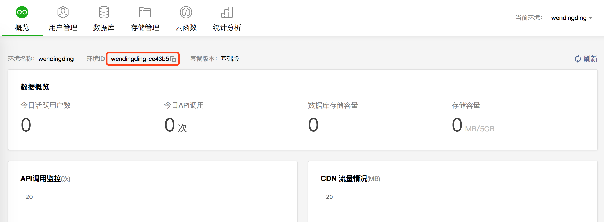
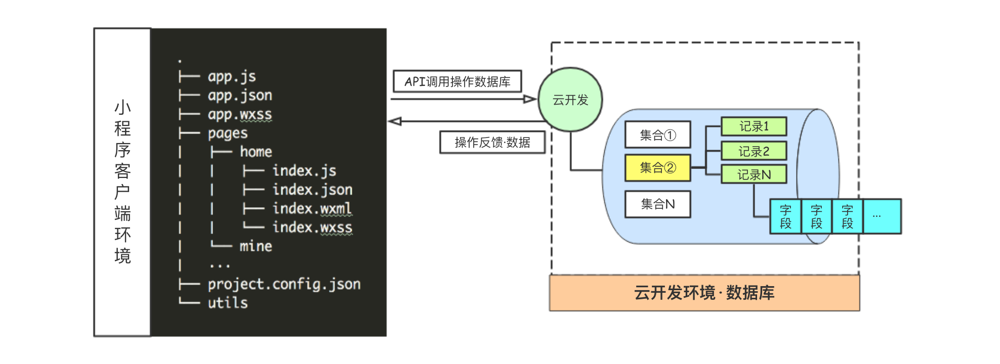
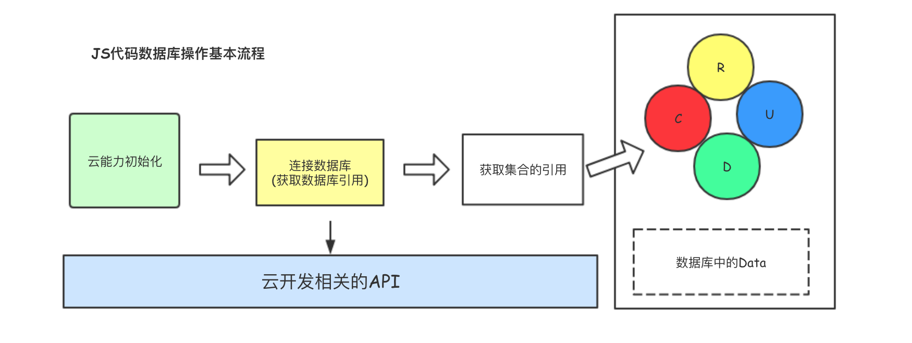
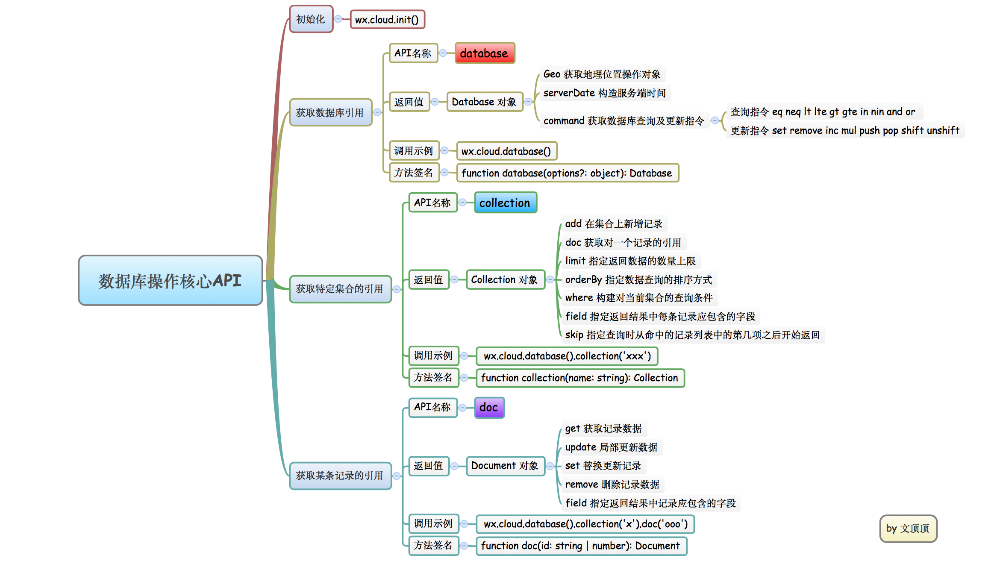
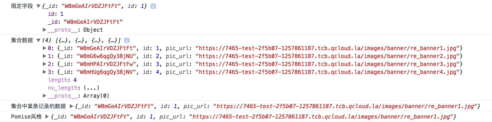

微信小程序实战[02]-衣橱商城云开发数据处理
本文简单说明衣橱商城小程序开发过程中的服务器端和数据处理方式。
1.0 服务器端和数据处理方式说明
在做小程序开发的时候，基本都需要进行服务器端和数据的处理。
目前来看，服务器端的处理可以有两种方式，一种是自己搭建服务器来处理(可以使用Node、Apache等)也可以选择直接使用小程序开发工具中已经集成的云开发来处理。
在小程序.云开发官方文档中有如下描写。
1 | 开发者在开发小程序、小游戏时，无需搭建服务器，即可使用云端能力。 |
云开发提供3种基础能力支持
❏ 云函数 云端运行的代码，微信私有协议天然鉴权，只需编写业务逻辑代码
❏ 数据库 支持既能在小程序前端操作，也能在云函数中读写的 JSON 数据库
❏ 文件存储 支持小程序前端直接上传/下载云端文件，在云开发控制台可视化管理
2.0 开始使用云开发
001 开通云开发功能
当使用APPID新建微信小程序项目后，在开发者工具工具栏左侧，点击 “云开发” 按钮即可开通云开发。
002 创建云开发环境
开通后我们能获得一套云开发环境，各个环境相互隔离，每个环境都包含独立的数据库实例、存储空间、云函数配置等资源。每个环境都有唯一的环境 ID 标识，初始创建的环境自动成为默认环境。
在创建开发环境的时候需要填写：环境的名称和环境的ID。其中环境的ID 是在使用云服务时需要用到的全局唯一标识符，一经创建便不可修改。
003 云开发控制台说明
当云开发环境创建好之后，我们将能够看到如下图所示的功能界面。
云开发控制台是管理云开发资源的地方，主要提供以下支持:
❏ 概览 查看云开发的基础使用数据。
❏ 云函数 查看云函数列表、配置、日志和监控。
❏ 数据库 管理数据库，支持对数据进行增删改查、管理索引和数据库访问权限等操作。
❏ 统计分析 查看云开发资源具体使用的统计信息，包括API调用图表以及存储容量和CDN浏览等。
❏ 存储管理 管理存储空间，可用于保存图片等资源，支持创建文件夹、批量上传和删除等操作。
❏ 用户管理 查看小程序用户的具体信息，包括头像、昵称、城市、最后一次进入时间等信息。
3.0 数据库和文件存储
数据库说明
云开发环境为我们提供了一个 JSON 数据库，与典型的关系型数据库所不同的是JSON数据库中的每条记录都是一个 JSON 格式的对象。一个数据库可以有多个集合（相当于关系型数据中的表），集合可看做一个 JSON 数组，数组中的每个对象就是一条记录，记录的格式是 JSON 对象。**[备注]** 关于json相关知识点可以参考javaScript和JSON这篇文章。
** ✧ 云开发环境中对数据库的操作**
云开发环境中的数据库对集合(相当于关系型数据库中的表)的操作主要有：添加集合、删除集合。
在添加集合的时候需要给集合设置一个名称，对某个特定集合的操作主要有：添加记录、编辑记录、删除记录等操作，每条记录中可以包含多个字段。其中记录就相当于是关系型数据库中的某一行，而字段则相当于是关系型数据库中的某一列。
在添加记录的时候支持手动创建也支持直接导入json或csv文件，因为小程序中需要使用到的数据通常都会比较大，所以建议在具体处理的时候选择直接导入文件会更方便一些。这里给出手动创建和导入json文件两种具体的操作示例。
001 手动创建
1 | (1) 新建集合 |

002 直接导入
1 | (1) 新建集合 |
** ✧ 小程序端对数据库的操作**
云开发环境中的数据库其主要作用是为前端的小程序应用提供具体的数据。
这部分主要介绍在具体写小程序代码时，如何连接到对应的数据库并通过代码的方式来对数据库中的数据进行操作。在小程序的js文件中我们可以通过直接调用云开发中数据库相关的API即可对数据库中的数据进行增删改查操作，更多的细节可以参考官方文档的说明。这里仅简单说明连接和操作数据库的基本流程并给出示例代码。
小程序端操作数据库的基本流程
① 云能力初始化
② 获取数据库的引用
③ 获取数据库指定集合的引用
④ 调用相关API执行CRUD操作
1 | //001 初始化操作(云能力) |
代码说明
注意用到的wx.cloud.init和wx.cloud.database等方法都是小程序提供的系统API，您可以通过查看官方API文档来学习这些方法的具体用法。上面的代码中我们首先进行了初始化操作，然后连接上了云开发环境中默认的数据库(如果存在多套开发环境那么需要通过给函数传递参数的方式来区分)，之后通过collection方法获取默认数据库中banners集合的引用并调用get方法来获取集合中所有的数据。如果调用成功，那么在success回调函数中我们可以通过该回调的参数来获取具体的数据，该数据默认已完成了反序列处理。
数据中每个集合的读写权限有如下情况：[1] 所有用户可读，仅创建者及管理员可写[2] 仅创建者及管理员可读写[3] 所有用户可读，仅管理员可写[4] 仅管理员可读写
** ✧ 数据库操作核心API简单说明**
注意 数据库API都是懒执行的，也就是说只有真实需要网络请求的 API 调用才会发起网络请求，其余如获 s取数据库、集合、记录的引用、在集合上构造查询条件等都不会触发网络请求。
**这里列出数据库操作中会触发网络请求的 API **
remove 删除一个记录数据
update 更新集合/记录数据
set 替换更新一个记录数据
get 获取集合/记录的数据
add 在集合上添加新的记录
count 统计查询语句对应的记录条数
假设我们在进行小程序开发的过程中，使用了云开发功能并在数据库中拥有名为banners的集合，在该集合中拥有多条记录，其中有一条记录的_id值为W8mGeAIrVDZJFtFt，这里给出一段对数据库中数据操作的示例代码。
1 | //001 初始化操作(云能力) |
给出上面js代码的执行结果

文件存储说明
小程序的云开发环境支持小程序前端对云端文件直接进行上传和下载的操作，且可以在云开发控制台对文件进行可视化的管理，支持对文件进行访问权限的控制，使用简单而且非常的方便。
我们可以把项目中需要用到的图片等资源通过云开发控制台直接上传并保存到**存储管理模块**中，然后在项目中需要用到的地方(或者数据库的对应字段中)直接以URL路径的方式进行引用即可。
此外，存储管理模块还提供了小程序客户端以及后端对文件进行上传、下载、删除等操作的两组API，直接调用即可。这里简单列出小程序客户端中相关的API操作，更多细节请参考官方文档。
❏ 上传文件
uploadFile()
❏ 下载文件downloadFile()
❏ 删除文件deleteFile()
❏ 临时换链getTempFileURL()
1 | //001 文件上传 |
4.0 衣橱商城中部分数据的处理
前面的篇幅一直在介绍小程序中云开发平台相关的知识点，接下来我们回到衣橱商城这个实际的项目中，该小程序中的所有数据我都暂时直接使用云开发环境来处理。在项目中实际进行处理的时候，主要分成三部分内容。
001 把项目中需要用到的图片等资源上传并保存到云开发环境的存储管理模块。支持批量上传，而可以自己创建|设置文件的具体路径，图片上传后点击详情能获取URL地址。
**002 根据项目的情况在云开发环境数据库中创建多个对应的数据集合并添加详细的信息(记录)**。首页模块中需要的数据集合为：banners(顶部轮播图)、hotList(热门分类数据)、timeLimitList(限时优惠数据)、topList(热门商品数据)、weeklyData(每周推荐数据)。
003 在小程序客户端通过调用对应的api来对数据库的数据进行操作。这里主要是在首页的javaScript文件(home.js)文件中调用api用来获取数据。